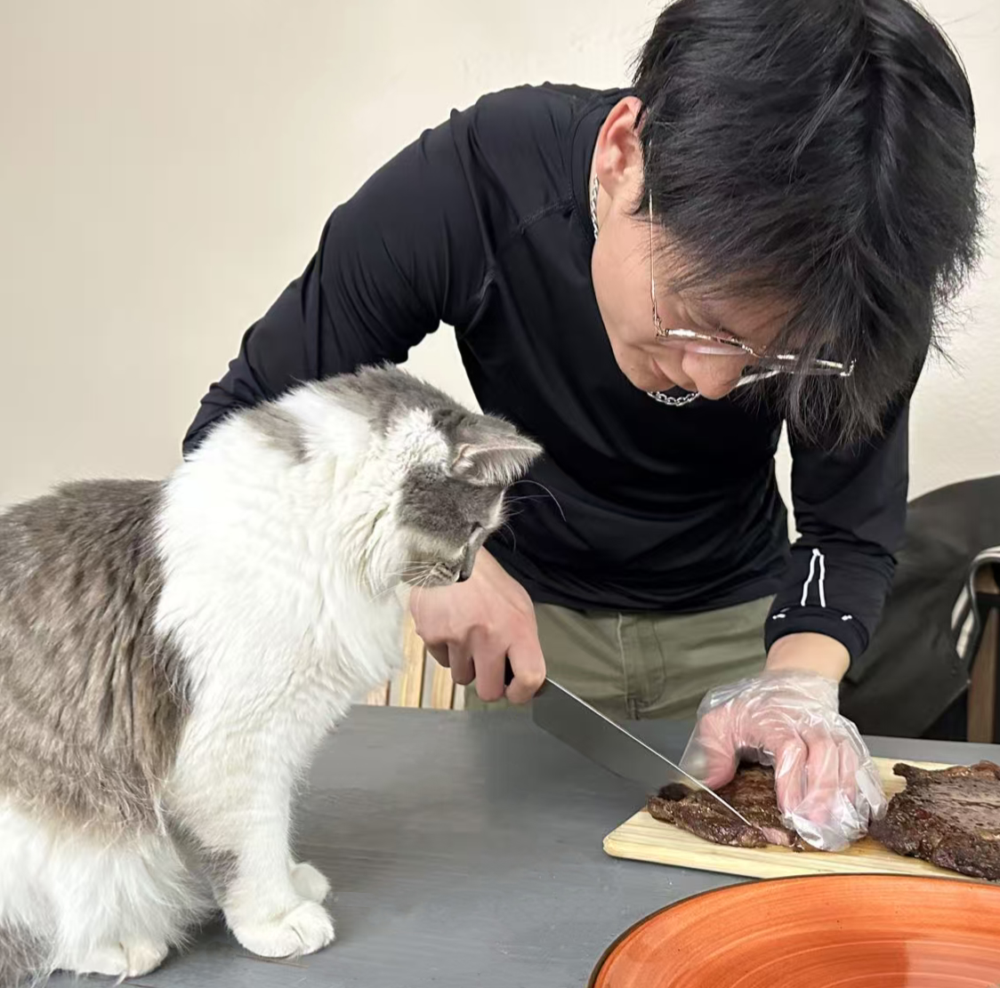
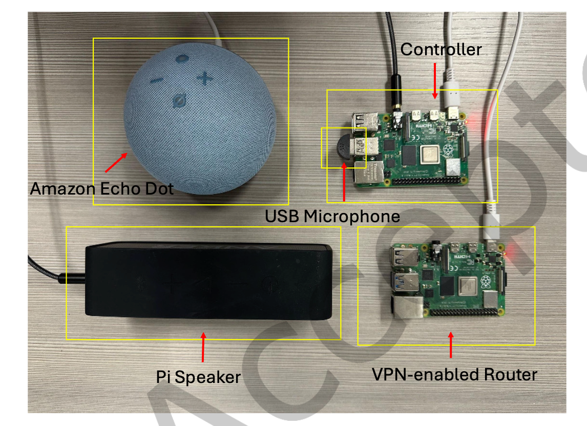
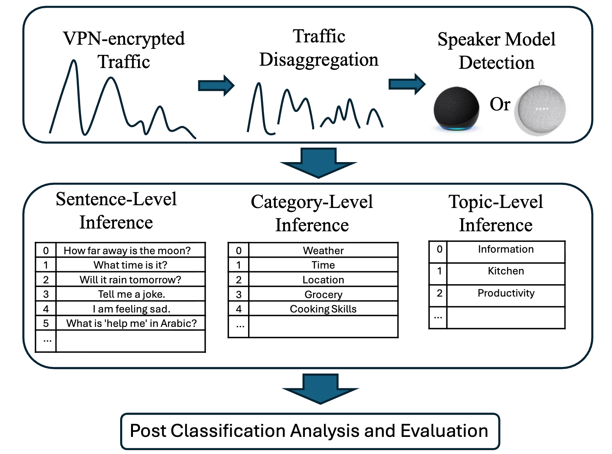

Xiaoguang Guo / 郭晓光
I am a Ph.D. candidate in Computer Science and Engineering at University of Connecticut (UConn), advised by Prof. Chuxu Zhang. My research focuses on Agentic Reinforcement Learning — I am interested in how to reliably train LLM-based agents that can plan, reason, and act over long horizons in complex interactive environments. I also work on graph learning, with a focus on robustness and safety.
Email: mca25001 [AT] uconn.edu

"Steak? That's mine." — Guagua
News
➤ [2025-05] Joined Machine Intelligence and Data Science (MINDS) Lab at UConn!
Selected Publications
Full list on Google Scholar.

Xiaoguang Guo, Zehong Wang, Jiazheng Li, Shawn Spitzel, Qi Yang, Kaize Ding, Jundong Li, Chuxu Zhang
arXiv preprint, 2026
We propose STEM-GNN, a pretrain-then-finetune framework that achieves a balanced fit–stability–generalization tradeoff for robust graph generalization under frozen deployment.

Xiaoguang Guo, Keyang Yu, Qi Li, Dong Chen
ACM Transactions on Sensor Networks (TOSN), 2025
We present a comprehensive study on smart speaker privacy under VPN protection: an LSTM-based attack that fingerprints voice commands from encrypted traffic across 5 real-world deployments on Amazon Alexa and Google Home, alongside effective defense mechanisms including traffic shaping and packet padding to mitigate such threats.

Xiaoguang Guo, Keyang Yu, Qi Li, Dong Chen
ACM BuildSys, 2024
We reveal that VPN encryption alone cannot protect smart speaker privacy, and propose an LSTM-based framework that fingerprints voice commands from encrypted traffic without local access, achieving MCC of 0.68 at sentence level and 0.84 at category level.
Services
Journal Reviewer:
ACM Transactions on Intelligent Systems and Technology (ACM TIST)
Transactions on Machine Learning Research (TMLR)
Conference Reviewer:
Pacific-Asia Conference on Knowledge Discovery and Data Mining (PAKDD 2026)
Resource-efficient Learning for the Web Conference (RelWeb@WWW/SIGKDD 2025)